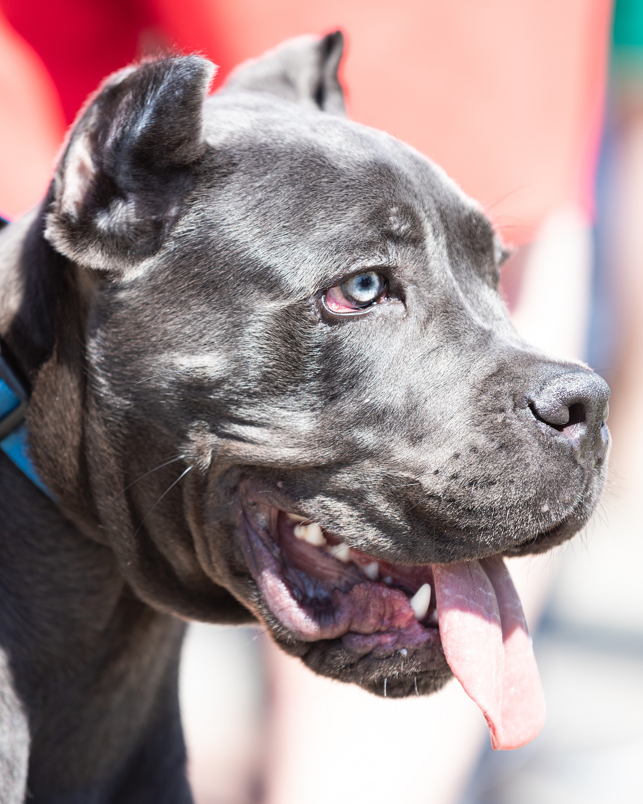
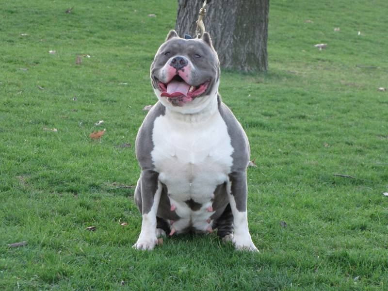
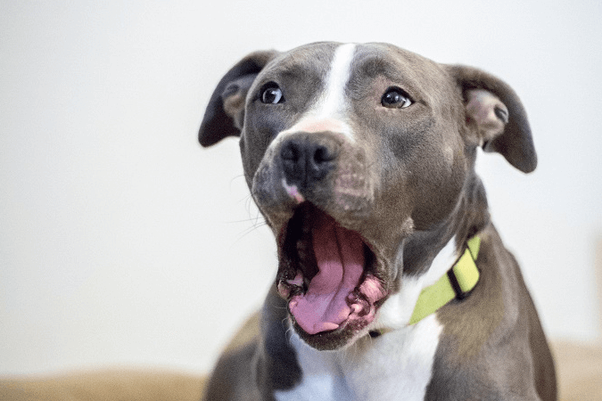
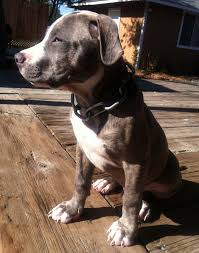
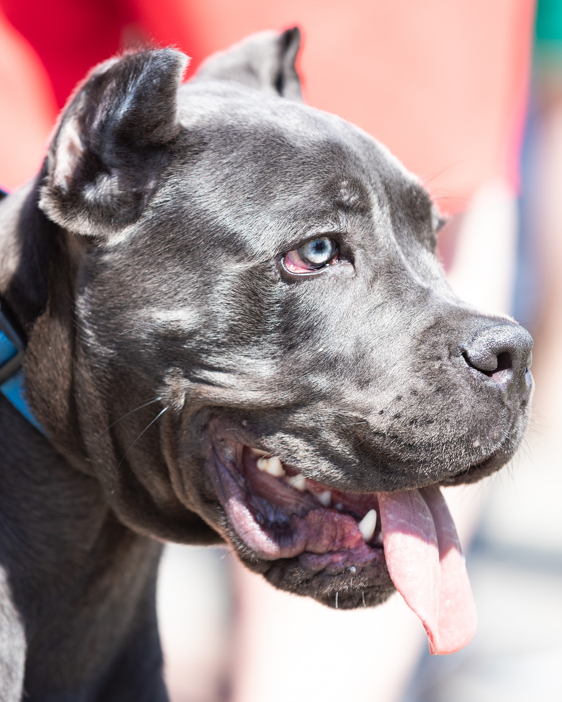
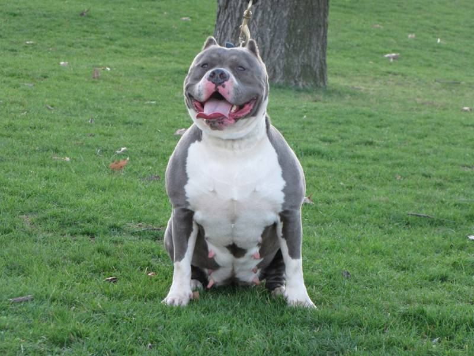
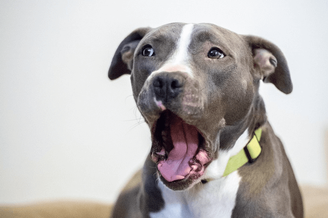
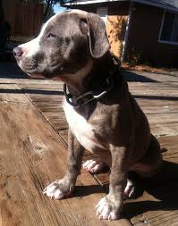

A blue nose pitbull is a color variation within the American pit bull terrier breed. The color comes from a recessive gene, which means that it is very rare. They are a grayish-purple color and have a nose the same color as their coat as well as blue eyes. It is also common to have white markings.
 







The blue nose pitbulls dont always have a blue nose even though they are called blue nose pitbulls.The blue nose ptibulls are claimed as a unique breed but is still a pitbull breed.The bluenose pitbulls are a very strong and smart breed although they dont make a very good gaurd or watch dog.They are great family dogs they are playful, loyal, loving and caring.